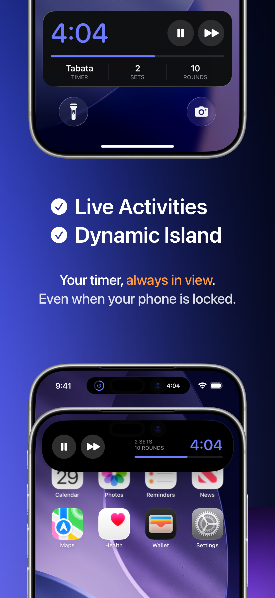

Побудуйте кожну фазу
Встановіть розминку, роботу, відпочинок, перерви між сетами, заминку, раунди та сети. Почніть із шаблону або створіть сесію повністю під себе.
Створіть тренування, яке ви дійсно виконуєте, відкладіть телефон і дозвольте чітким звуковим підказкам вести кожен раунд.
 Створено спортсменом
Створено спортсменом
Все, що вам потрібно
Достатньо швидкий для чотирихвилинної Табати. Достатньо гнучкий для багатосетових кіл, боксерських раундів, спринтів та вашої власної тренувальної структури.
Встановіть розминку, роботу, відпочинок, перерви між сетами, заминку, раунди та сети. Почніть із шаблону або створіть сесію повністю під себе.
Свистки, гонги та голосові підказки тримають вас у ритмі, поки екран заблоковано, а ваша музика продовжує грати.
Live Activities на екрані блокування iOS та Dynamic Island тримають ваше тренування постійно на виду.
Збережіть свої таймери один раз, перегляньте повну послідовність, а потім запустіть будь-яку рутину прямо з бібліотеки.
Переглядайте сесії за день, тиждень або місяць і відстежуйте час тренувань, завершені раунди та серії тренувань.
Ваші таймери, налаштування та історія тренувань залишаються на вашому пристрої. Жодного обов'язкового акаунту, жодної реклами, жодного зайвого.
Всередині FourEver
Яскраві кольори фаз, прогрес з першого погляду та зосереджені елементи керування роблять таймер легким для читання, не відриваючи вас від сесії.





Інші додатки та утиліти
Інструменти, створені з тим самим фокусом на продуктивність, корисність та контроль користувача.
Незалежне керування напрямком прокручування та прискоренням миші для macOS. Миттєво перемикайтесь між стандартним прискоренням вказівника для роботи та сирим лінійним відстеженням 1:1 для ігор, змінюючи напрямок прокручування фізичного коліщатка миші без впливу на жести трекпада.